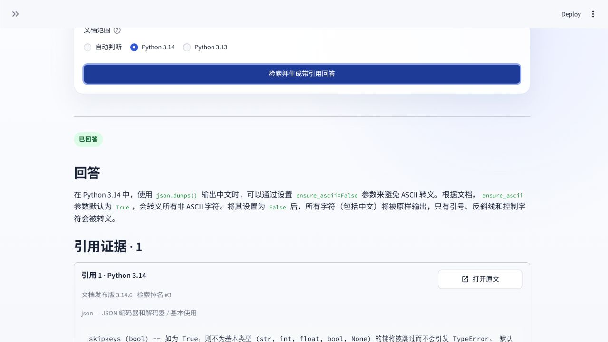
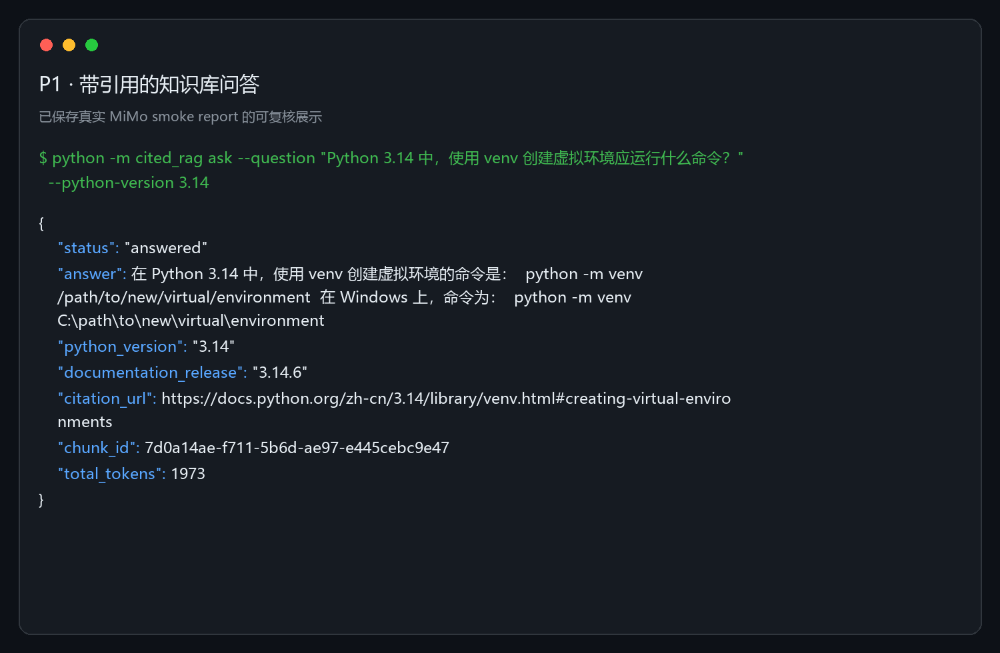

P1 · Python 官方文档知识服务
录制证据 · 非实时推理
让 RAG 回答可核验，
也让发布失败可追溯。
从单机Demo升级到只读FastAPI、Qdrant Server、确定性Hybrid、
OpenTelemetry与离线CI合同。页面只展示已提交机器报告；不连接模型，不接收任意问题。
当前：GitHub Pages 已公开发布；页面仍是静态录制证据，不是实时问答服务。
01 · 同条件比较
不是“效果不错”，是固定集上的差值。
新20题在任何查询前冻结。三种模式使用同一语料、问题和相关Chunk；旧50题只做稳定性回归。
指标来自三份`retrieval-v3-*-report.json`；每种模式60个延迟样本，外部API调用均为0。
02 · 生产化边界
模型只写答案，程序守住事实边界。
URL、版本、章节、摘录和Chunk身份全部由程序绑定；在线API没有导入或索引写端点。
A
读写隔离
API只持有Qdrant read-only key；构建、快照与发布走独立操作员路径。
B
失败关闭
排名漂移、索引身份不符或依赖未就绪时停止发布，不用重跑掩盖失败。
C
隐私默认
问题、证据、回答、Key和绝对路径不进入日志、trace或metric label。
03 · 录制问答
回答、拒答、跨版本比较，都保留来源。
下列内容来自已提交评估报告。切换案例不会调用FastAPI、Qdrant或MiMo。
04 · 本地运行截图
展示层复用同一服务，不复制回答逻辑。
截图来自已验收本地运行，不代表在线服务。原图哈希进入证据manifest。

Streamlit真实带引用回答 · 本地运行

CLI结构化输出 · 本地运行
05 · 失败证据
真正的工程证据，也包括没有上线的版本。
失败报告不覆盖、不删题、不把缺失指标补成0。
06 · 运行证明
容器、恢复、观测，各自有可复验合同。
运行状态来自本地机器报告；远程Windows/Linux合同已在公开仓库通过。
07 · 90秒讲解
面试时，只讲能被证据支持的内容。
- 0–20秒：问题不是“能回答”，而是回答必须绑定Python版本、章节和官方URL。
- 20–45秒：展示新20题同条件结果：Dense 75%，旧生产80%，确定性Hybrid 95%。
- 45–65秒：切换回答、拒答和版本比较；指出内容是录制证据，不是假装实时服务。
- 65–80秒：展示服务端RRF排名漂移如何阻断发布，以及后续确定性修复。
- 80–90秒：说明当前限制：静态Pages已发布，受控实时服务仍未公开。